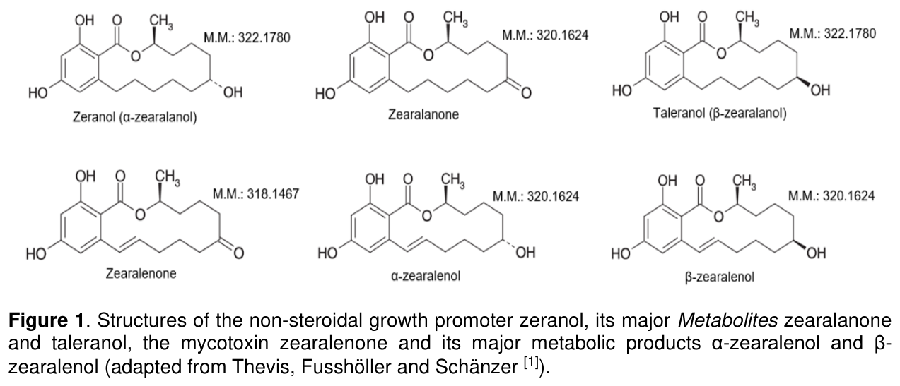

Technical Letters · TL04
Edition v3.0, 2021 (version 3.0) · effective 1 January 2021 · current
Retrieved on 26 November 2026 from https://www.wada-ama.org/sites/default/files/resources/files/tl04_zeranol_eng_2021_1.pdf
Editions: v3.0, 2021 (current) · v2.0, 2015
p. 1
ANALYSIS AND REPORTING OF ZERANOL
1.0 Introduction
WADA wishes to draw the attention of the Laboratories to the following observations and instructions on the analysis and reporting of Zeranol.
Findings of zeranol and its Metabolites Zearalanone and Taleranol (β-zearalanol) in urine Samples could be related to the consumption of mycotoxin contaminated food[1]. Moreover, it is possible to establish the mycotoxin source of zeranol analytically by testing for Zearalenone and its Metabolites α-Zearalenol and β-Zearalenol, which are observed in ultra-trace amounts or not detected at all in cases of zeranol administration[1].

Figure 1. Structures of the non-steroidal growth promoter zeranol, its major Metabolites zearalanone and taleranol, the mycotoxin zearalenone and its major metabolic products α-zearalenol and βzearalenol (adapted from Thevis, Fusshöller and Schänzer[1]).
[Comment: Zearalenone (or zearalenon), also known as F-2 mycotoxin, occurs mainly in corn, sorghum, wheat, barley but also in banana's, bean leaves, etc. Zearalenone is produced during the fermentation of stored grain by the moulds Fusarium roseum, F. culmorum, F. moniliforme and F. graminiarum. Meat consumed from animals fed with mycotoxin-contaminated grains may also lead to the urinary excretion of zearalenone and its minor Metabolite zeranol.]
2.0 Analysis and Reporting Requirements
Prior to reporting a result as an Adverse Analytical Finding (AAF) for zeranol, Laboratories shall take appropriate steps to evaluate whether the finding is the result of the consumption of mycotoxin contaminated food.
- When zeranol is detected in a urine Sample, Laboratories must also test for the presence of zearalenone, α-zearalenol and/or β-zearalenol, as well as monitor the following ratios of
p. 2
Metabolites:
- zearalenone/zeranol(α-zearalanol),
- α-zearalenol/zeranol(α-zearalanol), and/or
- β-zearalenol/taleranol(β-zearalanol).
In cases where Laboratories find zeranol in conjunction with elevated ratios of zearalenone/zeranol, α-zearalenol/zeranol and/or β-zearalenol/taleranol in a urine Sample, the detection of zeranol is the result of the consumption of mycotoxin-contaminated food, and therefore the finding shall be reported as a Negative Finding.
[Comment: Since zearalenone and both α- and β-zearalenol (all containing the C-C double bond) are not known to be produced from zeranol, all these ratios should be close to 0 in cases of zeranol administration, whereas they would be elevated when the zeranol finding is due to mycotoxin contamination.]
3.0 References
[1] Thevis M, Fusshöller G, and Schänzer W. Zeranol: doping offence or mycotoxin? A case-related study. Drug Test Anal. 3(11-12): 777-83, 2011.
Retrieved on 26 November 2026 from https://www.wada-ama.org/sites/default/files/resources/files/tl04_zeranol_eng_2021_1.pdf